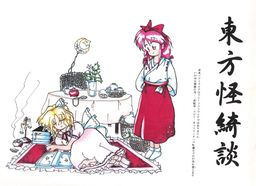

- Welcome to Touhou Wiki!
- Please register to edit. For assistance, check in with our Discord server or IRC channel.
Mystic Square
Mystic Square | |
|---|---|
|
 | |
| Developer | |
| Publisher | |
| Released |
Trial: November 21, 1998 |
| Genre |
Vertical Danmaku Shooting Game |
| Gameplay |
Single-Player Story Mode |
| Platforms |
PC-98 (NEC PC-9800 / EPSON PC-486/586) |
| Requirements |
|
Touhou
Gameplay[edit]
Mystic Square allows the player to select from among four unique protagonists, each hailing from one of the 2 prior danmaku shooting games in the series. Series mainstays Reimu Hakurei and Marisa Kirisame are joined by former enemies Mima and Yuuka Kazami for a journey reaching to the depths of the Makai. Mystic Square also marks the first appearance of Alice Margatroid as an opponent, who later stages a comeback in Perfect Cherry Blossom.
Although limited by the PC-98 hardware, Mystic Square is the most refined of the PC-98 Touhou titles, and features gameplay quite similar to Windows Touhou games. It employs a variant of Lotus Land Story's Dream Bonus system, rewarding the player for taking risks (i.e. collecting point items from the top of the field area). Its rank system, however, is more lenient than Lotus Land Story's.
Concept[edit]
The final Touhou PC-98 game developed by ZUN, Mystic Square followed its predecessor Lotus Land Story as a bullet hell-styled game. This iteration adds two more characters to the cast, but eliminates a choice of shot types for any individual character.
As the final PC-98 Touhou game, Mystic Square's gameplay bears the most resemblance to that of the Windows games.
Name[edit]
The game's title is a reference to a mystic square, a specific type of magic square, which is an n x n grid with numbers 1 through n2 arranged to give the grid special properties; the fact that Sara's theme is called "Magic Square" proves this.
Story[edit]
Following the events of Lotus Land Story, a massive quantity of demons beings to pour out of a cave, once again buried in the mountains. Seeking the source of this invasion, Reimu Hakurei and the other playable characters, Marisa Kirisame, Mima, and Yuuka Kazami must travel to Makai and journey to the fortress Pandemonium in order to confront the one behind the problem, Shinki.
Music[edit]
The soundtrack of Mystic Square includes 23 songs. Unlike previous games, which usually had unused songs revealed in soundtracks or Mystic Square's own music room afterwards or in Akyu's Untouched Score, this game didn't have any more music made for it.
Press[edit]
Mystic Square was developed and released in 1998 at Comiket 55. It was the last PC-98 Touhou game, and eventually on September 19, 2002, all the five PC-98 games have officially stopped being sold, a little after Embodiment of Scarlet Devil was released.
Mystic Square's soundtrack was included on Akyu's Untouched Score vol.2 at Comiket 71 in the winter of 2006.
External Links[edit]
Official[edit]
- Team Shanghai Alice
- Amusement Makers Official Site
- Selection of PC-98 game music (PMD)
- PC-98 Touhou music arranged for the SC-88Pro (MIDI)